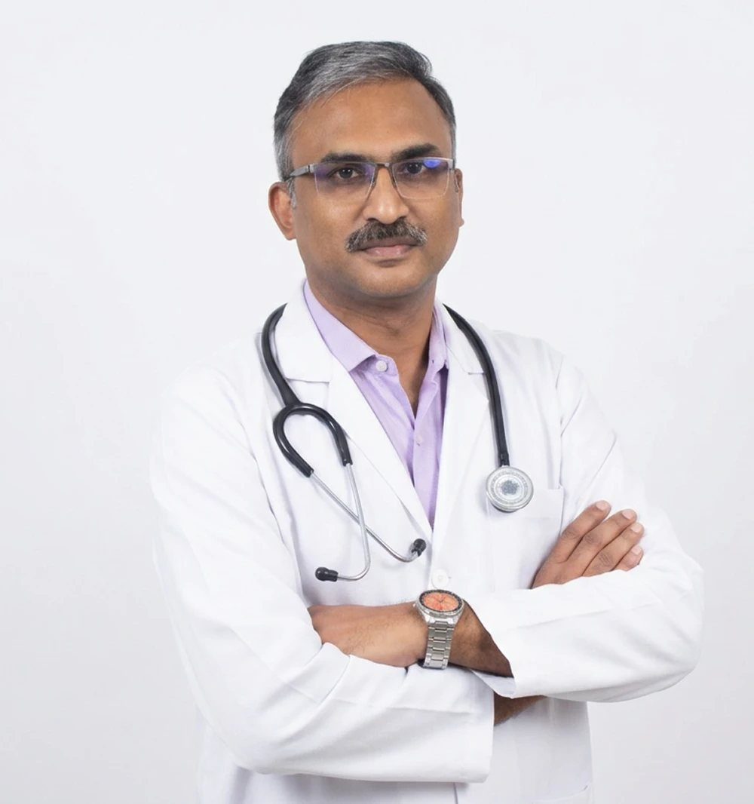

Dr. Shanker Mohan
Dr Shanker did his undergraduate and postgraduate training in India and then went and trained abroad in the highly reputed Royal London Hospital, UK for two years under some of the most reputed surgeons in the world. Following this he went to Dublin, Ireland for further specialised training as a specialist Registrar / Locum Consultant in the very busy National Maxillofacial Unit for a further four years.
He is a fellowship holder in Maxillofacial surgery from both the Royal College of Surgeons of England and Ireland. (FDSRCS in Dentistry / Maxillofacial surgery is the equivalent of FRCS for Medical doctors). He has vast hands-on experience in all aspects of maxillofacial surgery.
In addition to his own surgical hospital, he is also a visiting consultant to various leading hospitals in Madurai. He has also been on the postgraduate training faculty for maxillofacial surgery in India. He has numerous publications in both National and International journals. He has been an invited speaker for International conferences in Oral and Maxillofacial surgery in both India and abroad.
Dr. Shanker Mohan was worked with me for the three years. He is an excellent clinician, surgeon and academic. He has an excellent pair of hands with a deft touch. He has passed his fellowship in Dental Surgery from the Royal College of Surgeons England and Fellowship in Oral Surgery from the Royal College of Surgeons in Ireland.
Shanker has lectured at surgical, medical and nursing meetings as well as being an invited lecturer on the National Plating course in Ireland. His lectures are always well received. He is involved in teaching dental students, interns (medical), junior colleagues and his peers. He has taught me a few things over the few years that we have worked together.
He is competent in dentoalveolar surgery, facial trauma, tracheostomy, orthognathic surgery, alveolar bone grafting, temporomandibular surgery (ankylosis and TMJ lock) and has undertaken mouth cancer surgery at a high level.
Shanker has been an outstanding surgeon. He is hard working and is an excellent Clinician and has mastered a full range of surgical procedures within the specialty. He interacts with patients and colleagues in an exemplary manner and has a very pleasant personality. In addition, he is an excellent teacher. He imparts knowledge to his juniors in a clear and concise manner.
Dr. Shanker Mohan has been known to me personally for the last twenty months. In that time I would rate him as one of the best staff we have had. Shanker is always punctual, polite, and most of all, reliable. Shanker is quite capable of carrying out oral and maxillofacial surgical procedures and maxillofacial trauma independently.
I have known Mr. Mohan for 2 years now, I have always found him to be trustworthy and reliable to almost ridiculous extremes. He is someone that I would put my utmost faith and trust in to get any job done. As far as his surgical ability is concerned, I would have no problem with asking him to perform any surgery upon myself.
He was in my hospital for the past four years and had a very good training in oral & maxillofacial surgical procedures which includes minor oral surgery, and major oral surgical procedures.
He has been exposed to different type of reconstructive procedures, orthognathic surgery, T.M. Joint problems, & Maxillofacial Trauma. His interest in learning the work has encouraged us to teach him the maximum in the concerned specialty. The dedication, sincerity & the involvement in the work by him is commendable.
Dr Shanker Mohan’s clinical skills match his sound understanding of the fundamentals of dentistry. This young man has rich potentials which have blossomed forth in ever so many realms. His lovable attributes has made him popular with his teachers, colleagues & patients. Full of drive & initiative, he has always shown a willingness to shoulder responsibilities.
Dr Shanker has passed the primary FDSRCS examination in the very first attempt and this certainly speaks for his in depth understanding of the basic sciences. He has become a very competent clinician and capable surgeon. He gets on with all members of staff extremely well and has a good approach and attitude to the patients.
- Novel use of Suction during sinus lift procedure
- Is Allen’s test adequate prior to radial forearm free flap harvest?
- Case report of Aseptic Necrosis following Orthognathic Surgery treated with Hyperbaric oxygen
- Air Gun Pellet Injury to the Maxillofacial Region
- Comparison of Different Treatment Modalities in Mandibular Fractures (thesis study)
- Maxillofacial Surgery: present & future
- The scope of Maxillofacial Surgery
- Advances in Maxillofacial Surgery
- Saving and changing faces
- Orthognathic surgery: How I do it
- Maxillofacial Surgery: an overview
- Plating of the maxillofacial region: Latest advances
- Gunshot wounds to the face: current best practice
- SCC Maxilla: a combined Maxillofacial and Neurosurgical approach
- Avascular necrosis of the maxilla following orthognathic surgery, treated with hyperbaric oxygen: a case report
- Treatment of mandibular fractures: an overview
- Patient satisfaction following orthognathic surgery
- Comparison of Bupivacaine and Lignocaine in third molar surgery